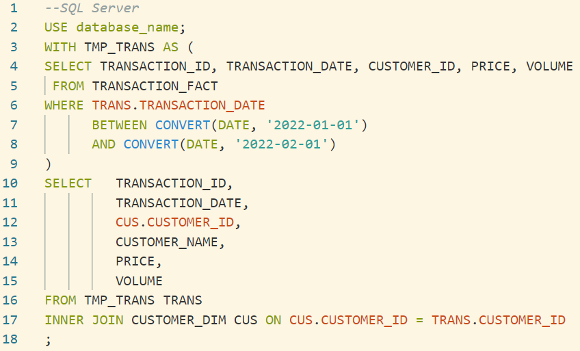
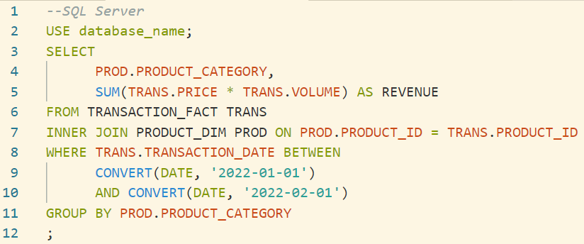

SQL (Structured Query Language) is a very common language and an essential tool used in day-to-day work of developers, data engineers and data analysts, data scientists… who want to interact with relational databases. Therefore, using SQL optimally is a great skill and a must-know technique. It could benefit us both time and money.
In this article, I would like to share with you who are interested in SQL in general and SQL optimization in particular some tips and tricks for SQL optimization. My writing includes 5 parts:
- Why do we need to know about SQL Optimization techniques?
- Prerequisite
- Tips and tricks
- Conclusion
- Preferences
Disclaimer: I write this article based on experiences that I had when working as data analyst at Home Credit Vietnam as well as data engineer at FPT Software currently. If you guys think there are some parts not correct or need to be improved or added, all feedback is welcome.
Why do we need to know about SQL Optimization techniques?
SQL Optimization are techniques that helps us to write effective queries to improve performance. One of the clearest benefit the optimization brings that we can see immediately is that the time we run queries down significantly so we don’t need to wait for long time to get the data. Another advantage is that we could save the money for the company as we run less expensive queries. Running any query costs resources such as disk I/O, memory… Therefore, writing and running an optimized query are essential.
Prerequisite
Readers should be familiar with SQL syntaxes or at least have basic SQL knowledge. If you don’t, I recommend you could take 2 courses below in addition to lots of very good resources you can find on the internet:
- sqlteaching : in this tutorial, you can acquire basic SQL syntax with practical tests and you can check your knowledge immediately.
- codecademy : there are few tutorials related to SQL in this site and they help you level up your SQL skills.
Also, all examples in this article follow the SQL Server syntax.
Tips and tricks
Get acquainted with system tables
As I know, almost relational databases have tables/views to manage metadata of their all objects (tables, views, stored procedures, jobs, etc…). For instance, in SQL Server, there are tables such as sys.tables, sys.objects, sys.indexes, sys.schemas… that store metadata of all objects. Knowing these tables is essential. They could help us have primary understanding about tables/views… When an object is created, when it is modified, how many rows a table has, which columns in a table are primary key or indexed… They are very helpful when we make optimized queries. Also, we could use these system tables for searching. One of advantage that I get most is searching tables/views used in which stored procedures.
For instance, the query below is used to find whether a table has any indexes and what they are:
DRY (Don’t repeat yourself)
This principle is not only applied in writing an optimal SQL query but also applied in any coding practice in any language. If your query has may parts in which code repeats again and again, we should not ignore or suffer running this kind of query, we should stop it there and figure out how to optimize it. If you ask the machine work on the same or mostly similar task multiple times, it also feels tired and bored. Sometimes it could make a strike ^_^ (the query could run forever until we stop it without any desired data or perhaps we would take long time to get what we desire).
For instance:
Limit data you need as much as possible
In my opinion, this rule is important. We only get enough data we need, no more. This rule is quite helpful, especially for transactional/fact tables with millions or even billions of records. Mostly, I used date-time columns to limit my data. Almost these tables have date-time columns which we can use to filter our desired data. Given these date-time columns have proper indexes/partitions, the machine has its own way to filter the data very quickly instead of it is forced to retrieve all data in huge tables. I use date-time columns in this example because it’s quite straight-forward to understand, however the rule also applies for other columns with different data types as long as they have proper indexes or partitions. We can use system tables (mentioned in tip 1) to find out whether columns in the table have proper indexes/partitions. If yes, that would be over the moon. If not and we know we will use these columns frequently later in queries, we should raise the voice to have it done. In case we have the right to do it, we could consider to apply proper indexes or partitions so that we can use in queries then. For instance, when we only need a data from 01/01/2022 to 31/01/2022:
For instance, if we only want to retrieve data from 01/01/2022 to 31/01/2022:
 |
Respect data types
Some people just put values to filter data in WHERE statement in single quote (that means the value is a string) all over the time without knowing what exact data type of these column they use. Certainly, it’s not a good practice. In fact, when we run such query but the data type of a column different from string type (varchar, nvarchar…), the machine will implicitly convert all data in the column to string and make a filter or comparison then. It causes a burden when it requires more resources to execute the implicit conversion. So it’s better that we know metadata of objects and input values with data types as the same as the columns’ data types. The system tables mentioned in tip 1 will help to find metadata about data types that we need.
For instance, TRANSACTION_DATE has data type of “date”, then we should convert inputs to date as well.
Avoid using SELECT *
You might think SELECT * is very convenient and time-saving, right? It probably yes or no. The answer is yes as it’s straight-forward, just few letters are typed. The answer is no when we think about optimization and readability. Imagine that we have a table with a hundred columns and SELECT * means we would get all data for a hundred of columns. However, in fact, we only need data for few columns. Compare retrieving data for 100 columns versus 10 columns, which one is faster? The machine needs to work harder in case of SELECT *. Also, specifying exact columns in SELECT statement helps to increase the readability. We know exactly what we need when we or our colleagues come back to the current work later.
For instance, we should list down all needed columns in TRANSACTION_FACT instead of using *:
Use alias
Together with specifying exact columns in SELECT statements, in case our queries are a bit complicated with multiple JOIN/LEFT JOIN statements, giving aliases for all columns could bring us benefits of readability and optimization. When adding aliases, the machine doesn’t need to guess which column belong to which table (like humans) so a query could run faster.
For instance, we should list down all needed columns in TRANSACTION_FACT instead of using *:
|  |  |
Use indexed/partitioned columns in WHERE/JOIN statements if possible
Its benefit is pretty straight-forward. I don’t tell you more details about indexes, partitions in this article, you can find many good resources on google talking about them. I just would like to say that we should use the columns which are indexed or partitioned in WHERE/JOIN if possible. Queries run faster.
Use LEFT JOIN instead of WHERE … NOT IN …, JOIN instead of WHERE … IN…
In case the list of values you want to filter in/out is short with few values, it’s okay to use IN/NOT IN. However, if we would like to filter with many values like more than a thousand, using JOIN/LEFT JOIN is better. Because the optimizer (you can find out more on the optimizer (Oracle) here) has different execution plans (more details) for executing a query, JOIN/LEFT JOIN is more effective.
For instance:
Avoid over-using SELECT DISTINCT
SELECT DISTINCT statement is more expensive than a normal SELECT statement when the machine has to do another step to get unique records. Therefore, we should understand our tables and data to use DISTINCT in appropriate situations. Getting duplicated data is not always bad as it could help us to find out issues in tables we use in the query.
For instance, CUSTOMER_ID is unique as it’s a primary key in the table CUSTOMER_DIM, therefore data retrieved without DISTINCT is unique. It’s not necessary to use DISTINCT in this case.
Avoid using unnecessary functions in WHERE/JOINs
Applying functions in any columns means the machine need to take more resources to execute these transformations, especially functions in WHERE/ JOIN conditions when it needs to apply functions first and then execute filters or joins. Once again, I believe that we should have knowledge on tables we use in the query to apply functions in appropriate situations. Don’t use them when it’s not really necessary.
For instance, we would like to get data for new customers created from 01/01/2022 to 31/01/2022 but we have CREATED_DATETIME’ s data type as datetime. Intuitively, we would like to convert CREATED_DATETIME to date for easy comparison but it’s not necessary.
Avoid using LEFT/RIGHT JOIN if not necessary
Some people use LEFT JOIN (RIGHT JOIN is similar to LEFT JOIN except different direction of 2 tables) all over the time. Perhaps they want to make sure they definitely don’t lose any data in the base table (the table after FROM keyword). It causes a burden as the machine needs to work harder. LEFT/RIGHT JOINs are more expensive than INNER JOINs. Therefore, similar to 2 tips I just mentioned, we should have knowledge on tables you use in the query to use different JOIN types in proper situations.
For instance, naturally CUSTOMER_ID could not be null in TRANSACTION_FACT (each transaction need to go along with a customer) and it’s a primary key in CUSTOMER_DIM. Therefore, they are no cases in which a CUSTOMER_ID doesn’t exist in CUSTOMER_DIM we should use INNER JOIN.
 |
DISTINCT versus GROUP BY are not good friends to each other
In fact, the GROUP BY statement already makes data unique based on columns we specify in SELECT and then calculate aggregation functions on those distinct data. Therefore, we don’t need to use DISTINCT in your GROUP BY queries. We have to avoid this situation.
For instance, we would like to get the revenue for each product category which products were sold from 01/01/2022 to 31/01/2022:
|  |
Use UNION ALL instead of UNION if possible
After we understand our data and we are sure that the data from all smaller queries before concatenating them together are unique, we don’t need to use UNION anymore. UNION is more expensive than UNION ALL when the machine need to do one more step to distinct your data. So, we have to avoid using UNION all the time.
For instance, we would like to know retail sales from both shops and e-commerce for a retail company. Sales from different channels are certainly not duplicated to each other. Therefore, it’s not necessary to use UNION in this case.
Use TOP/LIMIT if you just want to view the sample data
As I know, for some relational database management systems (RDBMS) like Oracle, the default of 50 records are retrieved when you run a query but other RDBMS like SQL Server, all records are retrieved if we run SELECT … without any limitation. That causes the machine needs to take more resources to get the task done. Therefore, in case we just need to view few rows of data for reference, specifying TOP/LIMIT to get only sample data is essential. TOP/LIMIT or other keywords depend on RDBMS we are using so we can reference to their documents for proper syntaxes.
For instance, we only want to view the TRANSACTION_FACT’s sample data:
Avoid always using wildcard at the beginning of searched phrase
Some people want to use one type of searching syntax to apply for all cases by putting a search keyword between 2 percentage signs like this ‘%searched_keyword%’. It seems pretty convenient and we never miss any desired data. However, as you might know, searching with % at the beginning of searched phrase is more expensive than searching by an exact character at the beginning. Therefore, we need to understand exactly what data we expect to get in order to avoid using wildcard at the beginning all the time.
For instance, we would like to search values which start with “Resolved” in the table CUSTOMER_FEEDBACK_FACT’s NOTE column:
Avoid using hints
Using hints (more details about hints (SQL Server) can be found here) is a topic that I used to be much interested in. In my opinion, this knowledge is an advanced topic and not easy to understand. Basically, when we run a query without any hints, the optimizer will analyze our query and make an execution plan to run the query in the most effective way. Everything is automatic and behind the scene. However, when we use hints in our query, the optimizer will use these hints to make execution plan. It just does what we guide it. Thus, if we give it proper hints, our query will be executed faster and more effectively. Otherwise, if we give it bad hints, the opposite result happens. Therefore, we need to be careful when using hints and make sure we understand what we use. It’s better to view the execution plan before applying hints. Bad hints are worse than no hints.
Gather statistics, rebuild indexes
When we insert/update/delete data in a table, its metadata will be changed constantly. Therefore, gathering statistics and rebuilding indexes help to recalculate metadata (such as number of rows, number of columns…) and rebuild indexes on columns up-to-date. That helps the optimizer to analyze metadata more accurately and then have a more effective execution plan. Thus, our queries will be run faster.
Avoid large queries
A query with too many JOIN statements, especially LEFT/RIGHT JOINs would take much resources to execute. Therefore, it’s better to avoid such situations. First of all, we should review whether all tables need to be involved and then exclude unnecessary tables. And after that if it’s still big, we can consider to split your query into multiple queries by inserting into different temporary tables as well as we can consider other optimization techniques. It depends on various situations.
For instance, a query with multiple left joins at once could be split into few queries under temporary tables.
Stop executing long-run queries
The rule of thumb is that it’s better to stop or cancel our query if its running time reaches 15 minutes and it continues running. We should stop and try to optimize it before we run it again.
Conclusion
In this article, I introduce you some tips and tricks for SQL optimization. I tried to cover all things that I have with my working experience and I believe we can utilize them in our studying or working with SQL. I hope this article is helpful and I welcome all of your feedback.
Thank you for reading and have a great day!